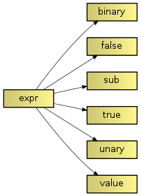

The feature module
A feature is a typed variable that can be used to parametrize the build process. A given feature variable may hold one or multiple values. It may be restricted to a pre-defined set of possible values, or it may be free. Most values are simple strings, though they may be interpreted as a path.
attributes
Attribute flags are used to indicate how to interpret feature values.
-
multi The feature may take multiple values.
-
path Values are interpreted as a path. By default, this is taken to be relative to the directory containing the issuing fabscript.
-
incidental Incidental values are not considered when matching two feature values.
The feature class
Constructor
-
feature() -
feature(name) -
feature(name, values) -
feature(name, attributes) -
feature(name, values, attributes) -
feature(name, **subfeatures) Construct a new feature.
Parameters: - name (string) -- the feature's name
- values (list) -- list of valid values
- attributes (int) -- attributes
- subfeatures (features) -- subfeatures
A feature normally takes a name, optional attributes, as well as a possible set of valid values. If no values are given, the feature's range of values is unrestricted.
Call operator
-
__call__(*values) Create a feature variable with the given values. (These need to match the values the feature was constructed with.)
Parameters: values -- initial values of the feature variable
The value class
Operators
-
__ior__(self, value) Add the given value to this variable (if it isn't already present). In addition to the above rules for constructing a new feature variable, this is only valid if the multi attribute is set for this feature. Trying to add a value to a feature variable without it will result in an error.
-
__eq__(self, other) Return True if other has or is the same value as self.
The set class
Class methods
-
__getattr__(feature) Return a condition expression that
Constructor
-
set() -
set(*values) Construct a feature set from the given values.
Methods
A set is a dictionary-like type and provides a similar interface:
-
keys()
-
values()
-
items()
Operators
-
__getattr__() For convenience, variables in a set can be accessed using simple attribute access syntax. If feature include is present in set s, s['include'] and s.include give access to it.
The condition.expr classes
-
class
expr Base class to construct condition expressions.
All relational operators are supported, and will result in compound expressions.
Examples
Assuming the following features are defined:
from faber.feature import *
include = feature('include', multi|path|incidental)
link = feature('link', values=('shared', 'static'))
target = feature('target', os=feature(), arch=feature())
it is possible to define values for them globally per command-line arguments:
faber include=search include=path link=shared target.os=Linux
These feature values are added to all artefact feature sets by default (but may be overwritten or added to by artefact-specific values:
greet = library('greet', 'greet.cpp', features=link('static'))
Artefacts may be conditionalized using condition expressions:
greet = library('greet', 'greet.cpp', condition=set.define.contains('HAS_FEATURE'))